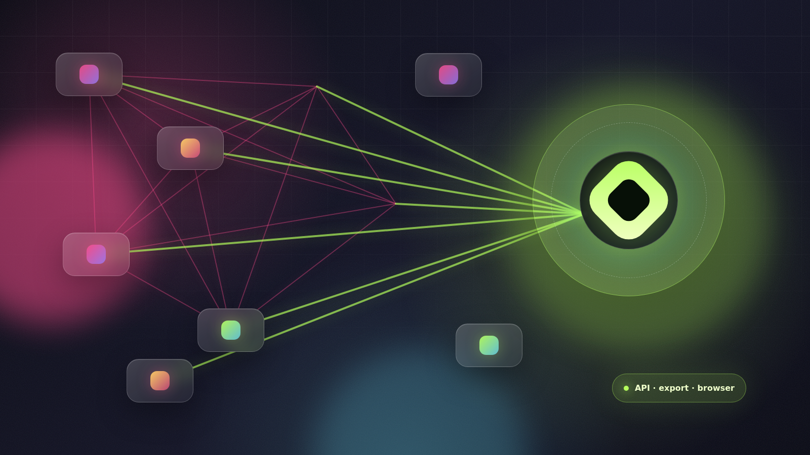

Every tool becomes a migration hostage.
A simple replacement turns into a map of hidden dependencies, manual inbox work, and people copying state between systems.
AI-assisted SaaS exit plan
aSaaSinators gets you there without a cliff. We install an agent as one authorized SaaS user, turn it into the front door for requests, reports, and data access, then shrink human seats and SaaS dependency until the old app can disappear without anyone losing their workflow.
“Handle the renewal inbox, update the CRM, and show me only the exceptions.”
Done. I used the SaaS seat where needed, reconciled the email trail, and saved the repeatable workflow.
SaaS products have to serve many roles with one generalized interface. Agents can adapt to each person’s information needs, permissions, vocabulary, and job-to-be-done. If work can be described in language, verified against data, and repeated safely, people should not keep paying pre-AI prices to operate a rented UI forever.
Humans are the integration layer
The migration excuse is usually true: the stack is tangled. Email feeds CRM, billing depends on support, reports live in spreadsheets, and people bridge the gaps by hand. aSaaSinators collapses those handoffs into one agent-mediated surface: API when possible, export/sync when useful, browser operation when that is all the vendor allows.

A simple replacement turns into a map of hidden dependencies, manual inbox work, and people copying state between systems.
People ask for outcomes. The agent chooses the safest route through email, API, export, sync, or browser automation while preserving audit trails and approvals.
Once requests and data access resolve through the owned model, traffic falls away from the vendor and cancellation becomes a final switch.
Migration without the cliff edge
We add the agent as a normal authorized user, teach it the app, map the screens, catalogue API/export options, and connect the first adjacent systems such as email.
The operating model
The agent is not just replacing clicks. It brokers requests, data access, reports, and cross-system handoffs in the shape each person needs. The legacy SaaS becomes one backend route among several, not the interface everyone has to learn.
“Reconcile this renewal,” “show my exceptions,” “turn this email into the right record.”
API when possible, sync/export when useful, browser automation when that is all the vendor allows.
Mirror SaaS objects, email context, approvals, and adjacent systems into a cleaner operating model.
Dashboards, forms, approvals, search, reports, and reminders become focused components and agent skills.
The graceful kill curve
Add one controlled agent seat, then remove scattered human licenses as work routes through the agent front door.
Phase one is complete when routine questions, reports, and jobs go to the agent instead of the SaaS interface.
The final cutoff arrives when owned components answer the work without critical SaaS data calls.
No API? Still not stuck.
We start with the strongest integration available and fall back only as needed. A browser seat is the floor, not the ceiling.
Structured, auditable, fast. Ideal for reads, writes, and reconciliation.
Data lands in your model while agents keep deltas clean and explainable.
If a human can do it through the UI, an agent can learn the route, validate the result, and reduce seat sprawl.
Illustrative seat-compression model
This is not a quote. It is a pressure gauge. Start with a few apps, then see the annual license surface that can become migration fuel when routine users stop needing direct SaaS seats.
How engagements can scale
Workflow maps, access ladder, risk register, and a pilot agent route for a high-friction job.
If we have seen the SaaS before, implementation starts from reusable routes, screen models, and data translations.
Agents connect email, SaaS tools, exports, and APIs at once, then lift the organization into one cleaner operating model.
The SaaS exit is finally gradual
When every person can ask the agent and every critical answer comes from owned workflows, cancellation stops being a migration cliff. The SaaS disappears; the work continues.
Start the SaaS escape plan